Pez Vela
ℹ️ Pez pelágico y altamente migratorio, reconocido por su gran aleta dorsal en forma de vela y su cuerpo adaptado para nadar rápidamente.
🌊 Hábitat: Mar abierto y zonas costeras
🎣 Alimentación: Peces pequeños y calamares
🕒 Mejor pesca: Mañana y tarde
📍 Zona: Aguas tropicales

Dorado
ℹ️ Información del pez: Pez pelágico muy activo y migratorio, conocido por sus colores azul verdosos y dorados y por su importancia en la pesca deportiva.
🌊 Hábitat: Aguas cálidas y mar abierto
🎣 Alimentación: Peces pequeños y crustáceos
🕒 Mejor pesca: Amanecer
📍 Zona: Zonas tropicales
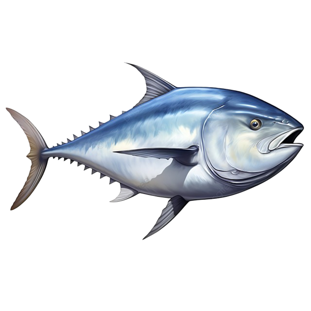
Atún
ℹ️ Información del pez: Pez oceánico pelágico que forma grupos y realiza grandes desplazamientos.
🌊 Hábitat: Mar abierto
🎣 Alimentación: Peces pequeños
🕒 Mejor pesca: Mañana
📍 Zona: Aguas profundas

Marlin Azul
ℹ️ Información del pez: Gran depredador oceánico y especie altamente migratoria, caracterizada por su cuerpo robusto y mandíbula superior alargada.
🌊 Hábitat: Aguas profundas
🎣 Alimentación: Peces y calamares
🕒 Mejor pesca: Amanecer
📍 Zona: Océano abierto
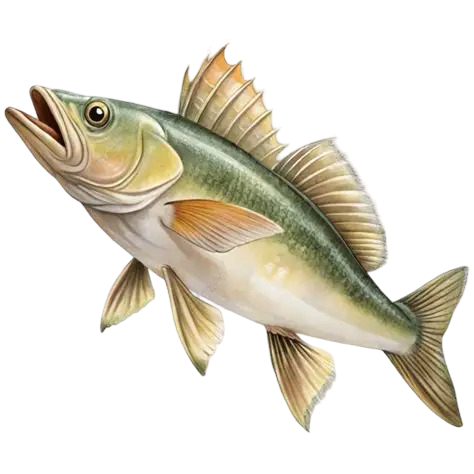
Róbalo
ℹ️ Información del pez: Depredador costero que puede desplazarse entre ambientes marinos, salobres y de agua dulce.
🌊 Hábitat: Esteros, manglares y costas
🎣 Alimentación: Camarones y peces pequeños
🕒 Mejor pesca: Amanecer y atardecer
📍 Zona: Zonas costeras

Pargo Rojo
ℹ️ Información del pez: Pargo de cuerpo robusto y coloración rojiza, asociado principalmente a fondos duros y ambientes rocosos.
🌊 Hábitat: Zonas rocosas y arrecifes
🎣 Alimentación: Camarones y peces pequeños
🕒 Mejor pesca: Tarde y noche
📍 Zona: Fondos rocosos
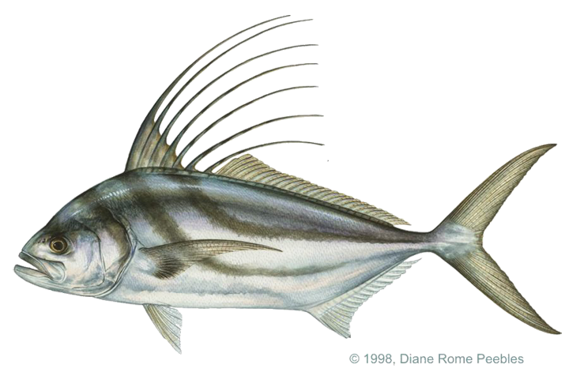
Pez Gallo
ℹ️ Información del pez: Depredador costero del Pacífico oriental, famoso por su característica aleta dorsal y su fuerza durante la pesca deportiva.
🌊 Hábitat: Playas y zonas costeras
🎣 Alimentación: Peces pequeños
🕒 Mejor pesca: Amanecer
📍 Zona: Costas arenosas

Peto
ℹ️ Información del pez: Depredador oceánico extremadamente rápido, de cuerpo alargado y dientes afilados
🌊 Hábitat: Mar abierto y aguas tropicales
🎣 Alimentación: Peces, calamares y crustáceos
🕒 Mejor pesca: Mañana y tarde
📍 Zona: Aguas oceánicas
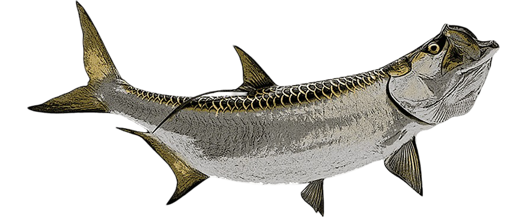
Sábalo
ℹ️ Información del pez: Pez grande y muy fuerte, famoso por sus saltos y su importancia en la pesca deportiva. Puede vivir en diferentes tipos de agua.
🌊 Hábitat: Ríos, esteros, lagunas y zonas costeras
🎣 Alimentación: Peces pequeños y crustáceos
🕒 Mejor pesca: Amanecer y atardecer
📍 Zona: Aguas costeras y estuarios
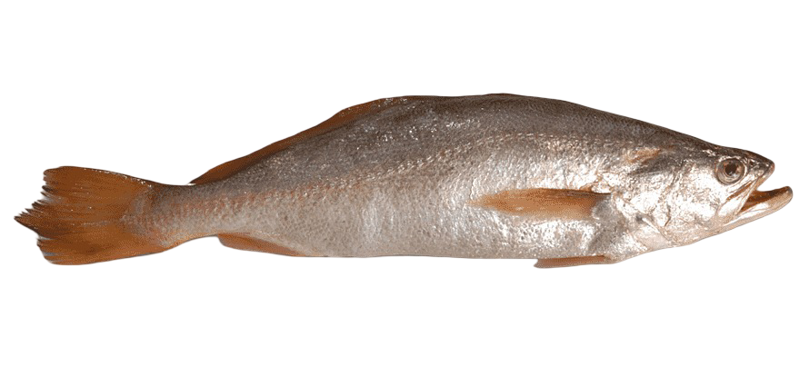
Corvina
ℹ️ Información del pez: Peces costeros de la familia Sciaenidae, generalmente asociados a fondos arenosos o fangosos y conocidos por producir sonidos mediante su vejiga natatoria.
🌊 Hábitat: Costas, esteros y fondos arenosos
🎣 Alimentación: Peces pequeños, camarones y crustáceos
🕒 Mejor pesca: Amanecer y atardecer
📍 Zona: Zonas costeras y estuarios

Sierra
ℹ️ Información del pez: Depredador pelágico que forma grupos y es uno de los peces deportivos más importantes de las costas del Pacífico de México y Centroamérica.
🌊 Hábitat: Aguas costeras y mar abierto
🎣 Alimentación: Peces pequeños y calamares
🕒 Mejor pesca: Mañana y tarde
📍 Zona: Costas tropicales

Pez espada
ℹ️ Información del pez: Gran depredador oceánico reconocido por su largo rostro en forma de espada y su capacidad para desplazarse rápidamente.
🌊 Hábitat: Mar abierto y aguas profundas
🎣 Alimentación: Peces, calamares y crustáceos
🕒 Mejor pesca: Amanecer y noche
📍 Zona: Aguas oceánicas

Mero
ℹ️ Información del pez: Depredador solitario asociado a fondos rocosos y aguas costeras.
🌊 Hábitat: Arrecifes, fondos rocosos y zonas costeras
🎣 Alimentación: Peces, cangrejos y crustáceos
🕒 Mejor pesca: Amanecer y atardecer
📍 Zona: Fondos rocosos y arrecifes

Pargo Negro
ℹ️ Información del pez: Pargo depredador de gran tamaño asociado a ambientes rocosos y arrecifes.
🌊 Hábitat: Arrecifes y fondos rocosos
🎣 Alimentación: Peces, camarones y crustáceos
🕒 Mejor pesca: Amanecer y atardecer
📍 Zona: Fondos rocosos

Barracuda
ℹ️ Información del pez: Depredador rápido y alargado, caracterizado por sus grandes dientes y comportamiento de caza.
🌊 Hábitat: Costas, arrecifes y aguas abiertas
🎣 Alimentación: Peces pequeños y calamares
🕒 Mejor pesca: Amanecer y atardecer
📍 Zona: Aguas tropicales costeras
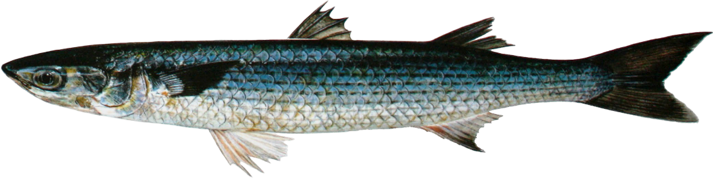
Lisa
ℹ️ Información del pez: Las lisas son peces costeros que suelen desplazarse en grupos y pueden tolerar diferentes condiciones de salinidad.
🌊 Hábitat: Esteros, manglares y costas
🎣 Alimentación: Algas, pequeños organismos y materia vegetal
🕒 Mejor pesca: Mañana
📍 Zona: Estuarios y aguas costeras
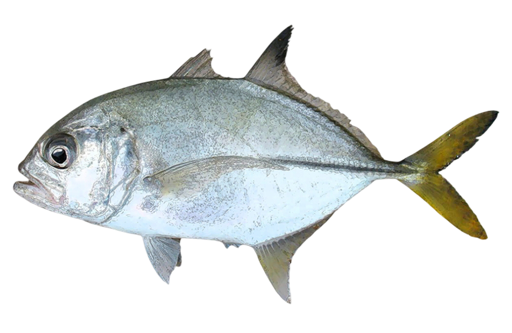
Jurel
ℹ️ Información del pez: Pez depredador fuerte que puede formar cardúmenes y que es importante tanto para pesca comercial como deportiva.
🌊 Hábitat: Aguas costeras y mar abierto
🎣 Alimentación: Peces pequeños y crustáceos
🕒 Mejor pesca: Mañana y tarde
📍 Zona: Costas y aguas tropicales

Pez León
ℹ️ Información del pez: Depredador fácilmente reconocible por sus largas aletas y espinas venenosas.
🌊 Hábitat: Arrecifes y zonas rocosas
🎣 Alimentación: Peces pequeños y crustáceos
🕒 Mejor pesca: Amanecer y atardecer
📍 Zona: Arrecifes y fondos rocosos
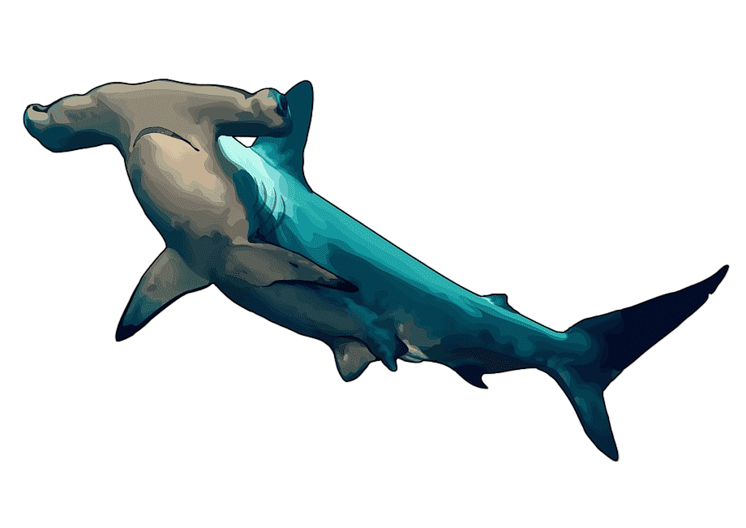
Tiburón Martillo
ℹ️ Información del pez: Tiburón caracterizado por la forma ampliamente extendida de su cabeza. Es un depredador costero-pelágico que puede desplazarse grandes distancias.
🌊 Hábitat: Aguas oceánicas y zonas costeras profundas
🎣 Alimentación: Peces, rayas y calamares
🕒 Mejor pesca: No recomendado como pesca objetivo
📍 Zona: Aguas oceánicas

Bagre
ℹ️ Información del pez: El bagre es un pez que suele vivir cerca del fondo y utiliza sus barbillas para localizar alimento. Algunas especies de bagre marino pueden vivir en aguas costeras, estuarios y zonas de agua salobre.
🌊 Hábitat: Estuarios, ríos y aguas costeras
🎣 Alimentación: Crustáceos, peces pequeños y organismos del fondo
🕒 Mejor pesca: Tarde y noche
📍 Zona: Fondos fangosos y estuarios
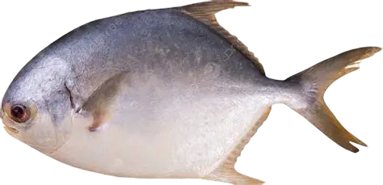
Palometa
ℹ️ Información del pez: La palometa es un pez de cuerpo fuerte y comprimido que suele desplazarse en grupos cerca de la costa. Es común encontrarla en zonas poco profundas con fondos arenosos y es apreciada como pez de pesca y consumo.
🌊 Hábitat: Aguas costeras y mar abierto
🎣 Alimentación: Peces pequeños y crustáceos
🕒 Mejor pesca: Mañana y tarde
📍 Zona: Costas tropicales

Pez gato de agua
ℹ️ Información del pez: El pez gato es un pez que generalmente permanece cerca del fondo y utiliza sus barbillas como órganos sensoriales para encontrar alimento. Dependiendo de la especie, puede vivir en ríos, lagunas, estuarios y otros ambientes de agua dulce o salobre.
🌊 Hábitat: Ríos, lagunas y aguas tranquilas
🎣 Alimentación: Peces pequeños, insectos y crustáceos
🕒 Mejor pesca: Tarde y noche
📍 Zona: Aguas dulces y zonas de poca corriente
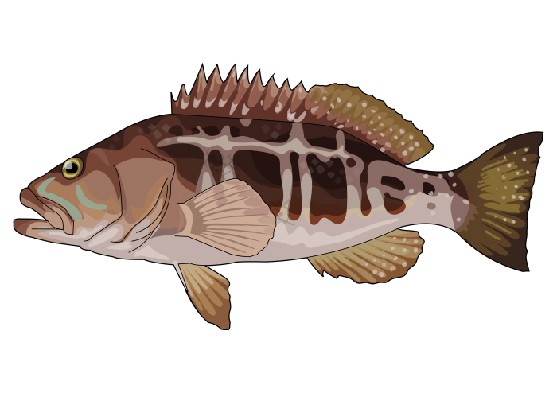
Cabrilla
ℹ️ Información del pez: La cabrilla es un pez depredador que suele permanecer cerca de rocas, arrecifes y otras estructuras del fondo. Normalmente espera cerca de estos lugares para capturar a sus presas.
🌊 Hábitat: Arrecifes y fondos rocosos
🎣 Alimentación: Peces pequeños, camarones y cangrejos
🕒 Mejor pesca: Amanecer y atardecer
📍 Zona: Fondos rocosos y arrecifes
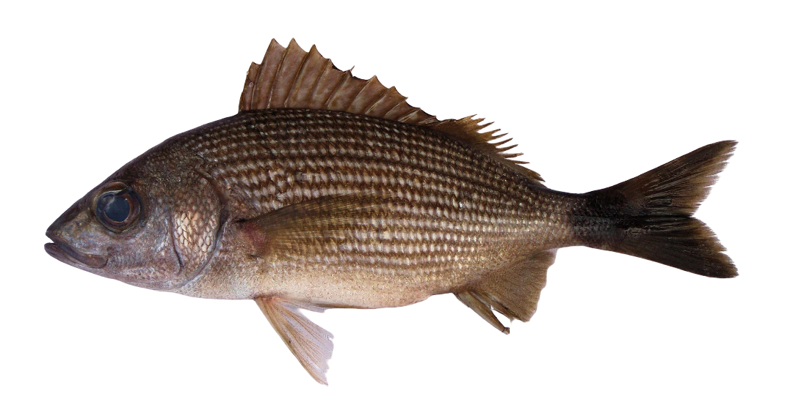
Ronco
ℹ️ Información del pez: El ronco es un pez costero que suele vivir asociado a arrecifes y zonas rocosas. Durante el día puede formar grupos alrededor de los arrecifes, mientras que por la noche se dispersa sobre fondos arenosos para buscar alimento.
🌊 Hábitat: Arrecifes, fondos rocosos y zonas costeras
🎣 Alimentación: Crustáceos, peces pequeños y organismos del fondo
🕒 Mejor pesca: Amanecer y atardecer
📍 Zona: Fondos rocosos y arrecifes